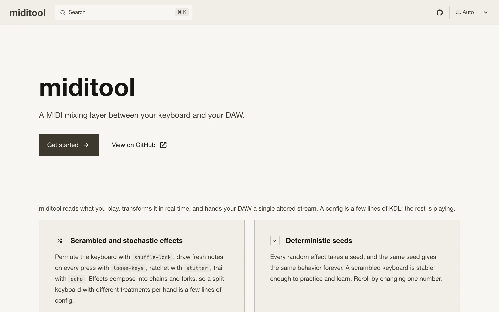

miditool is a Rust command-line program that sits between a MIDI keyboard and a DAW. It opens the keyboard's input port, runs every event through an effect graph described in a small KDL file, and republishes the result on a virtual output port that the DAW sees as just another MIDI device. A minimal config is four lines: an input substring matching the keyboard, an output virtual="miditool Out", and a couple of effects like shuffle-lock seed=42 and velocity-curve gamma=0.8.
I built it to play live on an 88-key piano, and that fixed the constraints before I wrote any effects. The processing path never allocates. Every random effect is seeded. And a note that goes on has to come off, even if the mapping changed while I was holding the key. The third one is the one I was afraid of. A stuck note at a gig is a sustained tone that nothing on the keyboard can stop, and the effects that make this tool worth having (remapping keys, re-drawing notes at random, swapping graphs mid-phrase) are exactly the ones that lose track of which note-off belongs to which note-on.
The signal path
Three threads talk through lock-free single-producer single-consumer rings from rtrb. The MIDI input callback stamps the raw packet with nanoseconds from one monotonic clock, pushes it into a ring, and unparks the graph thread. The graph thread decodes packets, runs events through the effect graph, and every 5 ms ticks free-running effects so generators keep going when nobody is playing. Its output feeds a second ring into the scheduler thread, which owns the output port and sends each event at its intended time, parking until half a millisecond before the deadline and spinning the rest.
An event's time field is when the scheduler sends it, so delaying an event means adding to its timestamp, and repeats are computed up front at note time. Nothing in the effect graph sleeps. Ports come from midir over CoreMIDI, ALSA, or WinMM.
The graph
The model follows mididings. chain { } runs children in series and fork { } runs them in parallel on copies of the event, merging the outputs in order and dropping exact duplicates so fork { pass; transpose 12 } doubles the notes without doubling every controller message. Filters gate only the event classes they understand, so key-range lets the sustain pedal and pitch bend through and narrowing a chain to half the keyboard doesn't strand the pedal.
Every effect writes into a fixed arrayvec of 128 events. Overflow drops events and bumps a counter instead of blocking or allocating, and effects that emit their own note-on and note-off pairs push them through an all-or-nothing helper so truncation can't keep an on and lose its off.
Seeded randomness
Each stochastic effect owns a PCG generator seeded from its config, with independent streams derived through SplitMix64. The two effects the project started with show why. shuffle-lock draws one seeded Fisher-Yates permutation of the keys at construction, so the keyboard is scrambled but stable enough to practice on, and loose-keys re-draws every note-on's key so the same key twice gives two different notes.
Fifty-two effects, mostly from the twentieth century
The effects crate has 52 modules, many of them mechanized composition techniques. row-snap replaces each note-on's pitch class with the next element of a twelve-tone row in any of the four classical forms, with inversion reflecting each pitch class about the row's first note, \( I_i = (2 r_0 - r_i) \bmod 12 \). sieve snaps keys onto a Xenakis sieve, parsed from an expression like "8@0|8@3|11@5" into a 128-bit membership set at load time. The M@R notation is Christopher Ariza's, from athenaCL (Computer Music Journal, 2005). Xenakis wrote modulus and residue as pairs joined by set operators, and Ariza's form is what people type. just retunes to 5-limit just intonation from a cents table. poisson-cloud bursts each key press into a grain cloud whose onsets come from a nonhomogeneous Poisson process, exponential gaps plus thinning. echo with a nonzero transpose is a canon rather than an echo, and its note-offs get the identical treatment, so a copy whose key falls off the end of the keyboard drops together with its off.
Note-off correctness
Pitch-remapping effects share a router that records, per channel and key, which output key each note-on produced, in a fixed 16 by 128 grid with no heap behind it. The matching note-off goes to the note that is sounding. A hot reload keeps the swapped-out graph draining until every note and pedal it opened has closed, so a note held through the swap gets its note-off through the mapping that started it, and up to three old generations drain at once. At the boundary the scheduler watches everything it sends through a note tracker, so shutdown, panic, or a killed scene emits exactly the note-offs and pedal releases needed to silence the DAW and nothing else.
None of that would have convinced me on its own, so the invariant is property-tested. The harness generates random sequences of up to 32 note-ons and note-offs across two channels and all 128 keys, runs them through an effect and then a flush, and feeds the output into a NoteTracker oracle that has to come out empty. Every effect in the crate goes through it, 62 property tests in all, and CI runs them on every push.
Scenes, hot reload, scripts
A config can group effects into named scene blocks and switch between them mid-performance. miditool run watches the config through notify with a 300 ms debounce, re-parses on change, and swaps the active scene's graph off the hot path. A broken edit is reported and leaves the running graph alone. A control block reserves keys as gestures for scene changes and panic, consumed before the graph sees them.
A chain can also hold a script node that runs a Luau file through mlua as an ordinary effect, synchronously on the realtime path. The sandbox makes that tolerable: no io, no require, a 16 MB heap, and a 5 ms per-call budget enforced through the Luau interrupt callback. The first time a handler errors or blows its budget, the node logs one line and becomes a passthrough, because a broken script must not silence the keyboard mid-performance.
The remote and the GarageBand problem
A remote node starts an axum server inside the process and serves a phone-sized control surface: the scene list, a panic button, and a live monitor of outgoing MIDI over a WebSocket at about 30 Hz, fed by a wait-free tap on the scheduler's send path so a slow phone loses frames instead of stalling anything.
The last problem is the DAW. GarageBand listens to every MIDI source at once, so it hears both the raw keyboard and miditool's output. On macOS, input "Roland" hide=true sets the CoreMIDI kMIDIPropertyPrivate flag on the source, which hides it from every other client while miditool runs. The flag lives in the MIDI server rather than the process, so it survives a crash. The CLI restores it on exit, and miditool unhide recovers after a hard kill by walking the device tree.